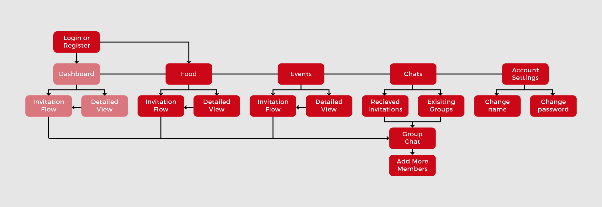

Agio
Large companies typically offer an abundance of discounts to their employees. Sometimes, they are scattered within their internal website, making them hard to find. Our team created an app that allows employees to easily access all discounts and invite co-workers out to lunch.
GETTING OUR BEARINGS
Within the timeframe of less than 2 months, our team, consiting of
Andrew Sosa (Android),
Justin Rose (iOS),
Isabel Laurenceau (iOS),
Nick Miller (Tester),
Jessica Hernandez (Tester),
Jennifer Colman (SCRUM Master), and myself (UI/UX), had to create the Agio Minimum Viable Product (MVP). After assigning roles, we got to work.
Maintaing Agility with SCRUM
By following an Agile workflow, (using time managed sprints, storyboarding features, cross-checking progress with retros, etc.) we were able to develop at a manageable pace. Additionally, we were able to quickly fix problems and keep everyone accountable.
After storyboarding, we finalized and organized our initial features:
Features
- Create and send invitations
- View food discounts
- View event discounts
- Search for discounts
- Local notifs for discounts using geolocation
- Detailed description of resturants
- Temporary chat group creation
Stretch Goals
- In-app food ordering
- Uber and Lyft integration
- Open app to other cities
- Including hotel discounts
- Push notifs for discounts using geolocation
- Community outreach opportunities

FIGURING OUT ARCHITECTURE
Once features were established, we began to flush out the hierarchy of views within the app. The main screens needed would be dashboard (not implemented), food, events/attractions, chats and account settings. From here, smaller interactions would follow. Since the dashboard isn't available, it starts at food instead.SKETCHING OUT POSSIBLE SOLUTIONS
Many solutions for layouts were consdiered. However, for the app, the best way of displaying imagery was through a cell view. Assuming that users are judging the quality of the resturaunt through photos, this was the best way of showcasing resturaunts.
One of the features left out of the app, due to technical constraints, were reviews, where within each resturaunt/attraction would be ratings and reviews. Because this feature was unavailable, we had to shift focus onto imagery.
WIREFRAMING
After I finished my sketches, I produced digital wireframes, using Axure, to get my ideas across to the developers. Their purpose was to layout the architecture of each screen, leaving out polish, like percise margins, imagery, and color. Once development began, the design went through many changes, altering our vision for the final design.
TIDYING UP AND MAKING IT PRETTY
After finishing the groundwork, I started on my HiFis, adding color, margins, typography, iconography, and so on. Designs were finished early on in the process, so during development, the design saw many changes to accomidate techincal difficulties and other issues.
Throughout the process, our flexibility was contantly challenged, as issues arose regularly. For example, during development, we were prohibited from using CoacoaPods, a dependency management system that gives access to frameworks. Without these tools, our app couldn't perform key functions, requiring us to pivot to the discount centered app we have now, from the Yelp-type app we had. While we lost a couple weeks of work, this steered us towards a solid direction.
You can take a look at the fruit of our efforts here with the Marvel prototype.